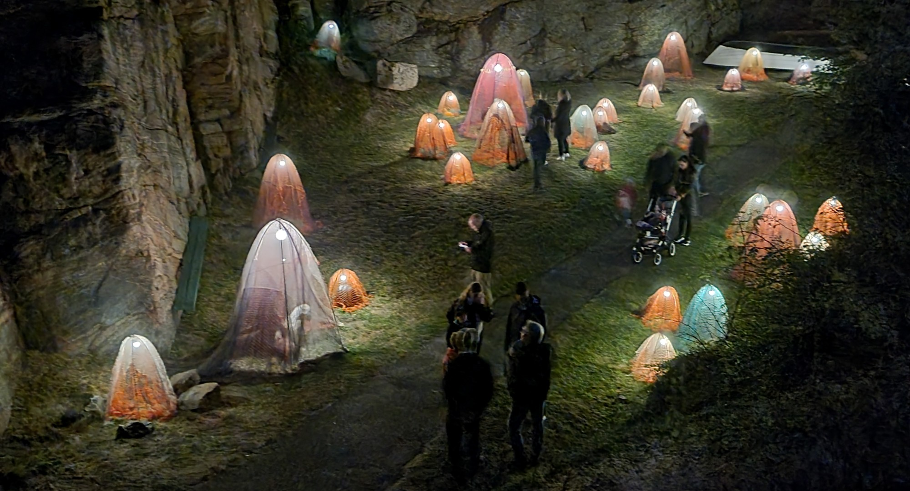

ISLAND OF LIGHT Smogen, Sweden
Coming to this island I have a sense of wonder in this wild empty landscape where the light festival takes place.
There is a small harbour and I will give you a mini tour taking in a couple of the other artists work along the way.
By night the same spot glows with ultraviolet light. The suspended artworks are by Matej Bizovicar.
Walk the boardwalk to where the harbour ends and the wilderness begins and pass the Underworld created by Aleksandra Stratimirovic

Next you come to ValleVek, where Hand of the Galaxy, my kinetic light waves sits in one of the few grassy patches outside the village amidst the rock formations.

By day the walk continues well beyond the valley into a natural wonderland

Many thanks to
Dulce Ahlberg, founder and director of the Island of Light festival
Vanja Daggfeldt for some of the photographs above
Sofia C Linden, technical assistance and design of the landscape lighting of the rock formations.
Too many others to mention all.
Island of Light is organized by the non profit association
“Smögen Art-Light Festival”
Main Sponsors: SMOGENS BYGG AB, CREATIVE TECHNOLOGY NEP Live Events, ISLAND OF LIGHT